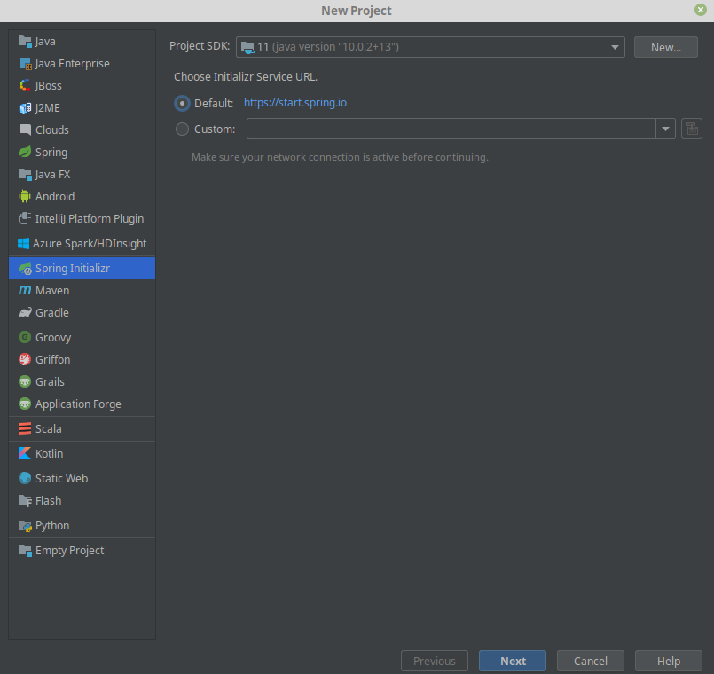
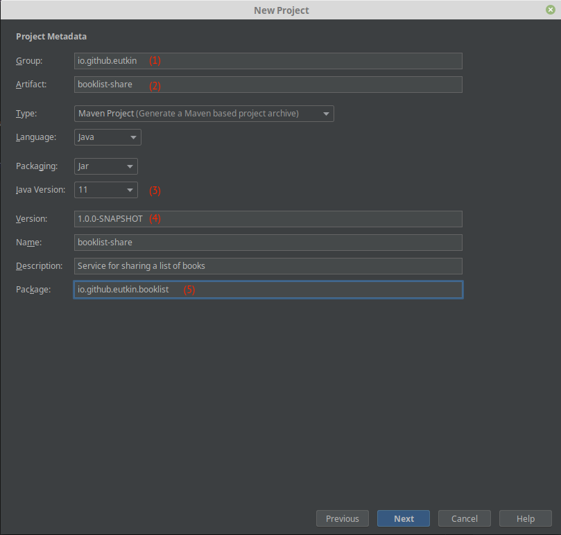
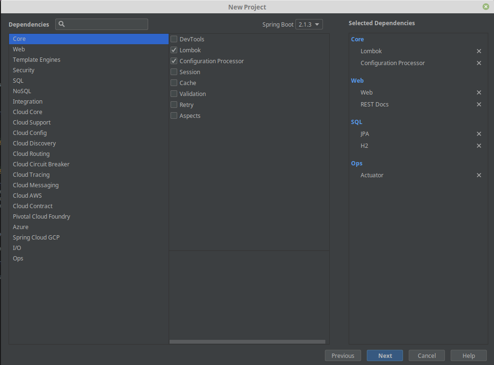
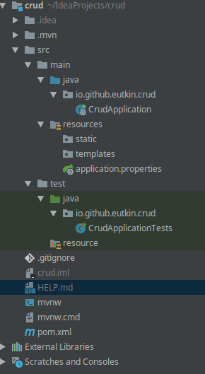

CRUD приложение на Spring Boot 2#
Требования к окружению#
- git
- Intellij Idea Ultimate (мы же не простые ребята)
-
Плагины для идеи:
-
.ignore
-
lombok plugin
-
-
maven (можно встроенный в идею)
Инициализация проекта#
Проект можно проинициализовать либо на сайте, либо через ultimate idea.
Выбираем New Project:

Далее:

- GroupId -- ваш идентификатор как автора. Если не знаете, что писать, пишите io.github.<ваш ник на гитхабе в нижнем регистре>
- ArtifactId -- название проекта. Пишется в нижнем регистре, слова разделяются
- - Версия Java. В большинстве компаний используется 8 версия, но 11 уже стабильна и для новых проектов можно использовать ее
-
Версия. Версия состоит из 4 частей:
-
1.0.0-SNAPSHOT. Мажорная версия. Инкрементируется при масштабных изменениях, при сильных изменениях в API.
-
1.0.0-SNAPSHOT. Минорная версия. Инкрементируется при добавлении новой фичи
-
1.0.0-SNAPSHOT. Патч. Инкрементируется при исправлении бага
-
1.0.0-SNAPSHOT. Квалифер. Альфа, бета, снапшот и так далее
-
-
Рут пакет.
Следующий шаг помогает выбрать зависимости:

Рекомендуется набор зависимостей, как на скриншоте.
- Lombok -- кодогенератор
- Configuration Processor -- позволяет интегрировать ваши конфигурационные параметры в мета файл конфигурации спринга. На практике эта информация нужна IDE, чтобы работало автодополнение и так далее.
- Web -- и так все понятно
- REST Docs -- документация к апи (swagger)
- JPA -- ORM (hibernate)
- H2 -- встраиваемая бд, идеальный вариант для разработки
- Actuator -- предоставляет API, с помощью которого можно мониторить приложение
- Security -- модуль для авторизаций и всего такого.
P.S.
Я забыл добавить Security на скрине, но переделывать мне лень. Поэтому добавьте сами в pom.xml в dependencies:
<dependency> <groupId>org.springframework.boot</groupId> <artifactId>spring-boot-starter-security</artifactId> </dependency>
Получаем проинициализированный проект:

- .mvn -- здесь лежит встроенный мавен. Используется при настройке CI.
-
src
-
main
-
java -- исходники
-
resources -- ресурсы. Конфиги и все то, что окажется в classpath
-
static -- используется только в веб. В папке лежат статические ресурсы, js, css, etc
-
templates -- используется только в веб. Лежат шаблоны для шаблонизаторов.
-
-
-
test -- папка с тестами
-
java -- исходники тестов
-
resources -- уже было, но только для тестов
-
-
-
.gitignore -- специальный файл-конфиг, который позволяет не пихать в гитхаб лишнего
- mvnw|mvnw.cmd -- так называет мавен wrapper. Позволяет использовать мавен из папки .mvn.
- pom.xml -- описание сборки для мавена
DDL скрипт#
Вспомним нашу ER-диаграмму:

И напишем ddl скрипт, который будет задавать структуру базы данных. Используем синтаксис postgres'a, так как
в бою будет он. Чтобы H2 мог разобрать с диалектом postgres'a, добавляем в url параметр MODE=PostgreSQL.
Модифицируем application-dev.properties:
# показываем генерируемый хибернейтом sql spring.jpa.show-sql=true\ # включаем h2 консоль, что можно было посмотреть содержимое бд spring.h2.console.enabled=true # отключаем автогенерацию схемы по entity, так как схему будем создавать через sql spring.jpa.hibernate.ddl-auto=none # Нужно добавить MODE=PostgreSQL. Нормальный способов нет, поэтому пишем всю строку подключения и # и добавляем параметр туда spring.datasource.url=jdbc:h2:mem:%s;DB_CLOSE_DELAY=-1;DB_CLOSE_ON_EXIT=false;MODE=PostgreSQL # отключаем пока security spring.autoconfigure.exclude=org.springframework.boot.autoconfigure.security.servlet.SecurityAutoConfiguration
Добавляем в ресурсы файл schema.sql, содержащий следующий ddl скрипт
create table authors ( author_id bigint not null, name varchar(255) not null, primary key (author_id) ); create table genres ( genre_id bigint not null, genre varchar(255), primary key (genre_id) ); create table publishers ( publisher_id bigint not null, publisher_name varchar(255) not null, primary key (publisher_id) ); create table books ( book_id UUID not null, publish_date date, short_description varchar(1000) not null, genre_id bigint references genres(genre_id), publisher_id bigint references publishers(publisher_id), primary key (book_id) ); create table users ( login varchar(255) not null, display_name varchar(255), password varchar(255), primary key (login) ); create table booklists ( booklist_id UUID not null, name varchar(255), author varchar(255) references users(login), primary key (booklist_id) ); create table booklists_books ( booklist_id binary not null references booklists(booklist_id), book_id binary not null references books(book_id), primary key (booklist_id, book_id) ); create table booklists_users ( booklist_id UUID not null references booklists(booklist_id), login varchar(255) not null references users(login), primary key (booklist_id, login) ); create table books_authors ( book_id UUID not null references books(book_id), author_id UUID not null references authors(author_id), primary key (book_id, author_id) );
Создание моделей#
Модели можно сгенерировать либо по таблицам в базе (способ поищите сами, их много), либо написать руками.
Код моделей можете посмотреть на гитхабе, на примере разберем только несколько.
Пользователь:
@Entity @Table(name = "users") public class User implements UserDetails { // А вот это интерфейс Spring Security, // маркер того, что класс хранит информацию о пользователе @Id private String login; // На самом деле здесь не хранятся пароли. Здесь хранится его хэш. // Это необходимо для того, чтобы не хранить пароли в базе в открытом виде. // Работает это довольно просто. Нам извне приходит пароль (при логине пользователя) // Внешний пароль мы хэшируем и проверяем, совпадает ли он с хэшом из базы. // Так как для одинаковых паролей хэш будет одинаков, то все ок private String password; private String displayName; @ManyToMany(cascade = ALL, mappedBy = "users", fetch = EAGER) private Set<Booklist> booklists = new HashSet<>(); // Здесь хранятся роли пользователя, админ там, секретарша или типа того // Но у нас будет только одна роль, поэтому в базе мы ее не храним и забиваем // гвоздями. Не забудь только про ROLE_, без него не будет работать. @Override public Collection<? extends GrantedAuthority> getAuthorities() { return Collections.singleton(new SimpleGrantedAuthority("ROLE_USER")); } @Override public String getPassword() { return password; } @Override public String getUsername() { return login; } // Ниже идет всякая фигня, если мы как-то хотим забанить пользователя @Override public boolean isAccountNonExpired() { return true; } @Override public boolean isAccountNonLocked() { return true; } @Override public boolean isCredentialsNonExpired() { return true; } @Override public boolean isEnabled() { return true; } public User addBooklist(Booklist booklist) { booklists.add(booklist); return this; } @Override public boolean equals(Object o) { if (this == o) return true; if (o == null || getClass() != o.getClass()) return false; User user = (User) o; return Objects.equals(login, user.login); } @Override public int hashCode() { return Objects.hash(login); } // Геттеры & Сеттеры }
Список книг:
@Entity // Обязательная аннотация-маркер, что dto является сущностью @Table(name = "booklists") // аннотация для указания имени таблицы и схемы public class Booklist { @Id //обязательная аннотация для поля-первичного ключа @GeneratedValue(generator = "uuid") @GenericGenerator(name = "uuid", strategy = "uuid") //генерирует uuid автоматически // при сохранении в бд @Column(name = "booklist_id") //аннотация для указания // параметров маппинга и генерации схемы private UUID id; // не является обязательной, имя поля по умолчанию выступает как имя столбца private String name; @ManyToOne // аннотация для связи Много-к-Одному. // У нескольких буклистов может быть только один автор @JoinColumn(name = "author") // имя стоблца, по которому можно сделать // join для получения информации об авторе private User author; @ManyToMany // связь много-ко многим // здесь указывается колонки в таблице @JoinTable(name = "booklists_users", joinColumns = @JoinColumn(name = "booklist_id"), inverseJoinColumns = @JoinColumn(name = "login")) private Set<User> users; @ManyToMany @JoinTable(name = "booklists_books", joinColumns = @JoinColumn(name = "booklist_id"), inverseJoinColumns = @JoinColumn(name = "book_id")) private Set<Book> books; // Геттеры & Сеттеры }
Надо еще бы указать equals и hashCode, но сделаем это позже.
Немного про lombok
Многие любят использовать lombok при написания моделей. Я этого делать не советую по некоторым причинам:
- В сущностях и так слишком много аннотаций. Серьезно, только над самим классом уже две. А хотелось бы добавить
@Data,@Accessor(chain = true)(позволяет сеттить значения полей более удобно). Но в итоге весь класс оказывается увешан аннотациями так, что даже кода под ним не видно. - С аннотацией
@Dataтоже не все однозначно. Допустим у нам обычная bi-direction связь, например, книга ссылается на издателя, а издатель на свои книги. Если мы повесим эту аннотацию на класс книги и издателя, то после вызова equals & hashcode приложение уйдет в бесконечный цикл. Это происходит, потому что equals & hashcode генерируются для всех полей. То есть у издателя тоже будет вызван метод equals & hashcode, так как он является полем книги, а в нем есть поле с книгами, у которых этим методы тоже будут вызваны и так до бесконечности. Чтобы этого избежать, можно повесить аннотацию@EqualsAndHashCode(exclude = {"books"}, а это опять + 1 аннотация.
Исходя из озвученных причин я советую избегать использования lombok'a в сущностях
Прикручиваем Spring Security#
Если подключить зависимость
<dependency> <groupId>org.springframework.boot</groupId> <artifactId>spring-boot-starter-security</artifactId> </dependency>
то Spring позаботится о защищенности вашего предложения и создаст конфигурацию по умолчанию с пользователем User
и случайно сгенерированным паролем.
Чтобы настроить Spring Security по-человечески надо уже писать собственную конфигурацию. Часть работы мы уже сделали, создали собственную модельку для пользователя. Теперь настроим все по красоте:
@Configuration @Profile("dev") // конфиг будет работать, только если приложение запустить // под профилем "dev", потому что мы здесь отключим некоторые политики // безопасности, чтобы была возможность проверить // работу приложения, пощупать руками, так сказать @EnableWebSecurity // аннотация, чтобы включить security и наследуемся // от адаптера-конфигуратора public class SecurityConfiguration extends WebSecurityConfigurerAdapter { // Это интерфейс модуля, задача которого вытащить пользователя из хранилища // В нашем случае, вытащить из базы. Мы сейчас доделаем конфиг // и напишем ему реализацию private UserDetailsService userRepository; // Это бин, который хэширует пароли. Для чего это нужно, я писал выше @Bean public PasswordEncoder bcrypt() { return new BCryptPasswordEncoder(); } // Здесь конфигурируем менеджера аутентификацим @Override protected void configure(AuthenticationManagerBuilder auth) { auth.userDetailsService(userRepository).passwordEncoder(bcrypt()); } // Здесь производится основная настройка @Override protected void configure(HttpSecurity http) { http // включаем basic auth. Это самый простой способ, // но для его использования // рекомендуется иметь https .httpBasic() .and() // Мы же пишем REST, а ему сессия не нужна. Отключаем ее создание .sessionManagement().sessionCreationPolicy(STATELESS) .and() // Сross Site Request Forgery - техника подмены запроса между сайтами // Я рак, я ей пользоваться не умею. Если ваш сервис использует // шаблонизатор и вы возвращаете или // получаете запросы с html страничек, то отключать его не надо. // В том числе и на проде. // А если вы через Postman хотите потыкать в свое API, // то можете отключать .csrf().disable() // Отключаем заголовок, который контроллирует наличие https, // так как у нас его нет и заголовок // в Postman мне ставить лень // Конечно, отключать это не следует, но пока идет разработка, // то лучше отключить, // иначе сервис будет плеваться 403 статусами и не давать работать .headers().httpStrictTransportSecurity().disable() .and() .authorizeRequests() // контроллирует, что для работы с API нужно авторизоваться // под ролью USER .antMatchers("/api/**").hasRole("USER") ; } // У нас есть h2 консоль для дебага, давайте отключим там security вообще @Override public void configure(WebSecurity web) throws Exception { web.ignoring().antMatchers("/h2-console/**"); } @Autowired public void setUserRepository(UserDetailsService userRepository) { this.userRepository = requireNonNull(userRepository); } }
Наша конфигурация требует UserDetailsService, напишем реализацию поверх репозитория Spring Data Jpa:
public interface UserRepository extends UserDetailsService, JpaRepository<User, String> { @Override default UserDetails loadUserByUsername(String username) throws UsernameNotFoundException { return findById(username) .orElseThrow(() -> new UsernameNotFoundException(username)); } }
Все, мы закончили.
Бизнес-логика и всё остальное#
Весь остальной код мы будем писать по мере надобности.
Мы анализировали бизнес-логику задачи в этом разделе.
Реализуем пока только следующие операции:
-
Создание буклиста
Пользователь посылает команду в приложение для создания буклиста. Команда содержит имя буклиста. Опционально, команда может содержать множество (множество в отличие от списка хранит только уникальные значения) id книг, которые добавляются в буклист. Приложение должно вернуть уникальный идентификатор созданной сущности (буклиста в данном случае), либо описание ошибки.
-
Добавление книги в существующий буклист
Пользователь посылает команду в приложение добавлении книгу в буклист. Команда содержит идентификатор буклиста, множество идентификаторов добавляемых книг. Приложение возвращает обновленный буклист, либо описание ошибки.
Способы реализации ввода-вывода или зачем плодить модели?#
Обычная трехслойка, есть контроллер, сервис и репозиторий. Слои обмениваются данными между собой, но здесь все не так однозначно. Есть несколько способов:
-
Вы просто обмениваетесь entity'ями между слоями. Вешаете на них валидацию, забиваете на факт того, что все 3 слоя от них зависят, просто и со вкусом.
Плюсы:
- Не надо писать лишних моделек
- Не надо писать конвертеры из одних моделей в другие
Минусы:
- Когда надо отдать данные, не укладывающиеся в структуру существующих моделей у вас будут проблемки
- Если добавлять аннотации на валидацию, то количество аннотаций достигнет критической отметки
- Нельзя менять структуру входных и выходных данных независимо от реляционной структуры
-
Вы пилите отдельные модели для команд от пользователя и для представления (view). Плюсы и минусы описаны выше, только наоборот.
Первый способ подходит для маленьких сервисов, которые проще переписать с 0, чем менять полпроекта, второй -- для монолитов и сервисов побольше.
Мы выбираем второй путь.
Алгоритм написания бизнес-логики и около того#
Как написать бизнес-логику за 2 минуты#
Алгоритм написания бизнес-логики и всяких вспомогательных классов из других слоев довольно прост.
-
Пишем модельку для команды (пакет
io.github.eutkin.crud.request). Модель должна содержать данные, которые приходят извне и необходимые для совершения операции -
Пишем модельку для отображения данных в пакет
io.github.eutkin.crud.view. Модель содержит информацию, которую мы хотим вернуть пользователю. -
Пишем конвертеры из команды в сущность и из сущности и представление
-
Пишем интерфейс и реализацию сервиса с бизнес логикой:
а. Конвертируем команду в сущность. б. Манипулируем сущностями. в. Конвертируем в представление
-
Если понадобится, пишем репозитории, но стараемся обходится без них (спасибо каскадным операциям)
-
Пишем фасад, который объединит наши сервисы с бизнес логикой (чтобы в клиентский код не пришлось инжектить кучу сервисов)
-
Пишем контроллер для операции.
Примеры реализации не забываем смотреть на гите (вы же скачали себе проект, да?)
RequestDTO & ViewDTO. Как и зачем#
Моделька Реквест содержит только те данные, которые необходимы для выполнения того или иного действия. Да, в принципе можно использовать и сущности, но это не очень удобно при взаимодействии с вашим API, так как нужно будет соблюдать правильную структуру. А тащить реляционную модель еще и в API как то совсем непрактично и избыточно.
Плюс отдельной модельки в том, что на нее можно повесить кучу аннотаций для валидации. Еще как прием, можно каждому реквесту делать поле с пользователем, чтобы отдельно его не надо было передавать. А пользователь довольно часто бывает нужен.
Если структура входных данных изменилась, то вслед за этим меняется только набор полей реквеста, его конвертер и реализация с бизнес-логикой. Интерфейсы не меняются.
Моделька View это не то View из MVC (но очень похоже). Наша View большее определяет структуру и набор данных, некоторые правила их отображения. А уже затем она преобразуется во представление в классическом смысле (html, json, xml).
Конвертеры#
Но если структура входных и выходных данных отличается от реляционной модели, а бизнес-логика в основном строится на манипуляции сущностями, то где хранить информацию о преобразованиях DTO в Entity и наоборот? Данная логика хранится в конвертерах.
Для решения задачи преобразования одной сущности в другую существует огромное количество инструментов. Самый популярный вариант это Dozer. Но я выбрал MapStruct.
Сервисы#
Вот пример сервиса, который создает буклист для пользователя.
/** * Сервис по созданию буклиста. * * Буклист можно создать как пустым, так и с заданным набором книг * */ @Service // (1) @Transactional // (2) public class DefaultBooklistCreator implements BooklistCreator { // Конвертер из запроса в сущность private final CreateBooklistRequestMapper requestMapper; // Конвертер из сущности в ее представление private final BooklistViewMapper viewMapper; // Репозиторий для буклиста private final BooklistRepository booklistRepository; public DefaultBooklistCreator( CreateBooklistRequestMapper requestMapper, BooklistViewMapper viewMapper, BooklistRepository booklistRepository ) { // обязательно проверяем, что у нас в аргументах нет null значений. // Так мы обнаружим проблему во время поднятия контекста, а не во время // работы приложения this.requestMapper = requireNonNull(requestMapper); this.viewMapper = requireNonNull(viewMapper); this.booklistRepository = requireNonNull(booklistRepository); } /** * {@inheritDoc} */ @Override public BooklistView createForUser(@NonNull CreateBooklistRequest request) { Booklist booklist = requestMapper.convert(request); Booklist savedBooklist = booklistRepository.save(booklist); // (3) return viewMapper.convert(savedBooklist); } }
- Аннотация Сервис полностью аналогична @Component, но является маркером для классов, хранящих бизнес-логику, чтобы не путать их с инфраструктурными штуками
-
Аннотация, которая оборачивает метод (если над методом стоит), либо все методы класса (если над классом) в транзакцию.
Работает это так: во время поднятия контекста для бинов, с такой аннотацией создается прокси-класс, который оборачивает метод класса в транзацию:
// это приблизительный код public class BooklistCreatorProxy implements BooklistCreator { public BooklistView createForUser(@NonNull CreateBooklistRequest request) { var tx = transactionManager.createTransaction(); try { var result = invokeMethod(arg); tx.commit(); return result; } catch (Throwable ex) { tx.rollback(); throw ex; } } }
- Супер сложная логика, да? Почему так? Потому что здесь бизнес-логика заключается в том, что нам надо добавить определенные сущности и установить их взаимосвязи с уже существующими. А там алгоритм простой. Правильно преобразовать входные данные в структуру реляционной модели и сохранить. Поэтому большая часть ответственности ложится на плечи конвертера:
@Mapper(componentModel = "spring") public interface CreateBooklistRequestMapper { @Mapping(source = "owner", target = "author") @Mapping(source = "name", target = "name") @Mapping(source = "books", target = "books") @NonNull Booklist convert(@NonNull CreateBooklistRequest source); default Book uuidToBook(UUID book) { return new Book().setId(book); } @AfterMapping default void fillBooklistOnAuthor(@MappingTarget Booklist booklist) { booklist.getAuthor().addBooklist(booklist); } }
Мы преобразуем request в буклист, задавая структуру. Вспомним устройство сущностей, тыкни. Что нам надо сделать? Сохранить буклист, его связь через с пользователями через автора, связь с пользователями через кросс-таблицу с пользователями (у каких пользователей есть этот буклист), связь буклиста с его книгами.
Например, что сохранить связь между буклистом и книгами, надо присвоить ему Set<Book>, каждая из Book которой имеет
заполненный id (остальные поля можно не заполнять, мы же не сами книги сохраняем, а только связь, для которой нужны
только id)
Сохранение дочерних сущностей
Если же нам надо сохранить не только связи, но и сами сущности, то в аннотации @OneToMany, @ManyToMany,
@ManyToOneнадо добавить параметр cascade = CascadeType.PERSIST.
В итоге, правильно заполненная структура сущностей позволит нам сохранить именно то, что необходимо. Но на самом деле это все по началу будет непросто, здесь вы набьете много шишек.
Репозитории#
Если в сервисе вам понадобится какой-то репозиторий, например, BooklistRepository, то создаем его. Подход "сначала
создадим на каждую сущность по репозиторию, а там разберемся" не очень хорош, так как, во-первых, заставляет плодить
ненужные сущности, а, во-вторых, подмывает использовать вас несколько репозиториев там, где это не нужно.
Контроллеры#
Если у вас есть моделька request'a, значит нужен контроллер, который будет его принимать, это раз. А два, нужно как-то обрабатывать ошибки.
@RestController @RequestMapping("/api/booklist") public class BooklistRestController { private final BooklistServiceFacade booklistService; public BooklistRestController(BooklistServiceFacade booklistService) { this.booklistService = requireNonNull(booklistService); } @PostMapping public BooklistView create(@RequestBody @Valid CreateBooklistRequest request) { return booklistService.createForUser(request); } }
Видите, как все просто и аккуратно. Спринг очень хорош тем, что много грязи остается не видной глазу.
Исключения#
Исключения в яве делятся на два типа -- checked и unchecked.
Первые являются ожидаемыми исключениями при моделировании бизнес-процесса. Например, если вы сохраняете буклист с несуществующей книгой. Или, например, вы пытаетесь купить билет в кинотеатр, а мест уже нет. То есть ошибки абсолютно нормальные, про возможность их возникновения вы знаете и знаете условия их возникновения. Сам язык заставляет делать варианты обработок этих ошибок.
Вторые бросаются если происходит нештатная ситуация. База упала, кончилась память, вы не сделали проверку на null и т.д. Unchecked потому что не надо их проверять, так как они появляются неожиданно, как татаро-монгольское иго.
Задумка хорошая, но после 100500 try-catch где надо и не надо, все пришли к выводу, что давайте все исключения будут unchecked. А программист сам решает, проверять или нет.
По поводу обработок исключений.
Warning
Далее идет прием, который не всегда нужен. Надо понимать, что обработка ошибок очень сильно завязана на фронт-енд, а данный прием просто позволит отдавать русскоязычные сообщения об ошибке
Для сервисного слоя, если у вас есть специфичные ошибки, то я предлагаю завести специальный класс ServiceException.
public abstract class ServiceException extends RuntimeException { /** * Код сообщения с текстом ошибки. Сообщения лежает в message.properties */ private final String messageCode; /** * Аргументы для сообщения. */ private final Object[] arg; public ServiceException(String messageCode, Object... arg) { this.messageCode = messageCode; this.arg = arg; } @NonNull public String getMessageCode() { return messageCode; } @Nullable public Object[] getArgs() { return arg; } }
И его "неожиданный наследник":
public abstract class UnexpectedServiceException extends ServiceException { public UnexpectedServiceException(String messageCode, Object... arg) { super(messageCode, arg); } }
И пример исключения:
public class BooklistNotFoundServiceException extends ServiceException { public BooklistNotFoundServiceException(UUID booklist, String displayName) { super("booklist.not-exists", booklist, displayName); } }
messages.properties:
booklist.not-exists = У пользователя <{1}> список книг с id = {0} отсутствует
Обычной практикой является создание единого ControllerAdvice, который занимается
только обработкой ошибок.
@ControllerAdvice public class ExceptionHandlerAdvice // Стандартный интерфейс спринга, который нужен для // true инжекта messageSource (штука, для доступа к message.properties implements MessageSourceAware { private MessageSource messageSource; // Обрабатывыаем наши собственные ошибки @ExceptionHandler(ServiceException.class) public ResponseEntity<Map<String, String>> handle( ServiceException ex, Locale locale) { HttpStatus statusCode = ex instanceof UnexpectedServiceException ? INTERNAL_SERVER_ERROR : BAD_REQUEST; String message = messageSource.getMessage( ex.getMessageCode(), ex.getArgs(), locale); return status(statusCode) .body(Collections.singletonMap("error", message)); } // Обрабатываем ошибки нарушения ограничений реляционной СУБД. // Например, при попытки связать сущность с несуществующей сущностью @ExceptionHandler(DataIntegrityViolationException.class) public ResponseEntity<Map<String, String>> handle( DataIntegrityViolationException ex, Locale locale) { String message = messageSource.getMessage("conflict", null, locale); return status(CONFLICT).body(Collections.singletonMap("error", message)); } @Override public void setMessageSource(MessageSource messageSource) { this.messageSource = messageSource; } // Ошибки валидации @ExceptionHandler(ConstraintViolationException.class) @ResponseStatus(HttpStatus.BAD_REQUEST) @ResponseBody public Map<String, String> handle( ConstraintViolationException ex, Locale locale) { return ex.getConstraintViolations() .stream() .collect(toMap( v -> v.getPropertyPath().toString(), ConstraintViolation::getMessage ) ); } // Тоже ошибки валидации @ExceptionHandler(MethodArgumentNotValidException.class) @ResponseStatus(HttpStatus.BAD_REQUEST) @ResponseBody public Map<String, String> handle( MethodArgumentNotValidException e, Locale locale) { return e.getBindingResult() .getFieldErrors() .stream() .collect(toMap( FieldError::getField, error -> messageSource.getMessage(error, locale) ) ); } }